以下の内容について解説していきます。
- SORACOM LTE-M Button for Enterprise （以下、Enterprise Button） の登録について解説します。
- Enterprise Button のクリックされた位置情報とクリック種別（シングルクリック、ダブルクリック、長押し）をSORACOM Harvest（以下、Harvest） に保存、可視化する方法について解説します。
- Enterprise Button のクリックされた情報を SORACOM Funk（以下、Funk） と連携し、slackに通知する方法について解説します。
- Enterprise Button 、位置情報連携 、Harvest 、Funk の解約方法について解説します。
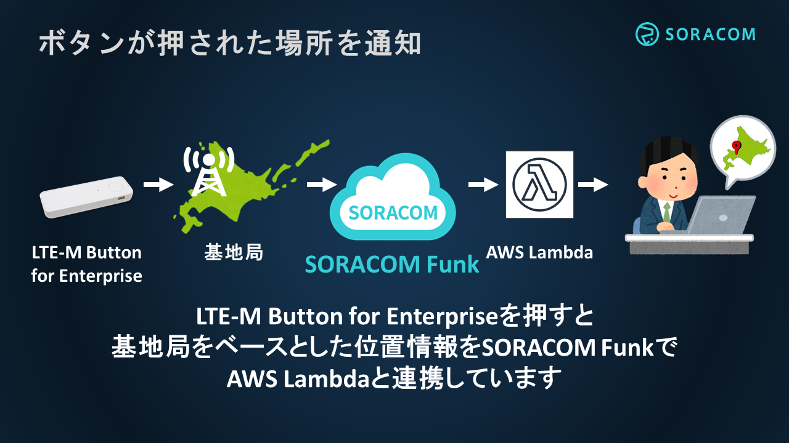
■目安となる料金
Enterprise Button をお持ちであれば 約 100 円で実施できます。内訳は以下となります(2019 年 7 月 1 日 現在、税・送料別)。
- SORACOM LTE-M Button for Enterprise 購入料金 : 5,980円
(参考 https://soracom.jp/products/gadgets/enterprise_button/ ) - SORACOM Air SIM(plan-KM1) 基本料金 : 100 円 / 月
SORACOM Air SIM(plan-KM1) データ使用料金 : 0.5 円 / KB
(参考 https://soracom.jp/services/air/cellular/price/#plan-km1) - SORACOM Harvest 利用料金 : 5 円 / 日 (無料利用枠あり)
SORACOM Harvest 書き込みリクエスト料金 : 0.004 円 / リクエスト(無料利用枠あり)
(参考 https://soracom.jp/services/harvest/price/) - SORACOM Funk 利用料金 TBD
(参考 TBD) - 位置情報サービス 利用料金 TBD
(参考 TBD)
このドキュメントを進めるにあたり以下のデバイスが必要となります。
- SORACOM LTE-M Button for Enterprise
このドキュメントを進めるにあたり以下のアカウントが必要となります。
- SORACOM
- AWS
- Slack
このドキュメントを進めるにあたり以下の知識が必要となります。
- AWS Lambda (node.js のサンプルコードは用意しています)
- Slack Webhook (スクリーンショット付きのチュートリアルは用意しています)
■SORACOM アカウントの作成
SORACOM Webコンソール ( https://console.soracom.io/#/signup) にアクセスします。
使用する SIM の種類を選択します。日本向けの SORACOM Air SIM を利用する場合は、カバレッジタイプ Japan を選択します。

「アカウント作成」画面が表示されますのでメールアドレスおよびパスワードを入力します。 また、契約者が個人であるか法人であるかを選び、法人の場合はさらに契約者の情報を入力します。 最後に規約に同意するためのチェックボックスを入れ、「アカウントを作成」ボタンを押します。

複数人でAir SIMの管理を行う場合は、事前にメーリングリストのアドレスを取得するなど、共有のメールアドレスをご利用ください。 下記の画面が表示されるので、メールを確認してください。
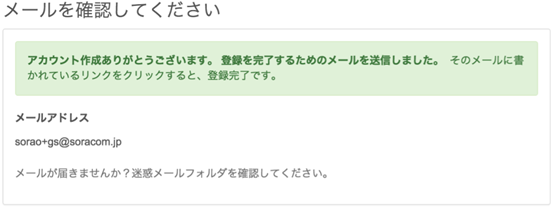
メールが届いたらリンクをクリックしてください。
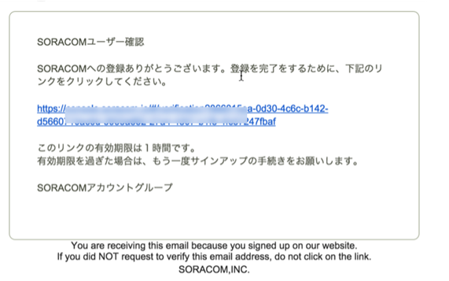
自動的にログイン画面に遷移しますので、メールアドレスとパスワードを入力してログインしてください。
■ユーザーコンソールへのログイン
ログイン画面が表示されるので、アカウント作成時に登録したメールアドレスとパスワードを入力し、 [ログイン] ボタンをクリックしてください。(ログイン画面が表示されない場合はブラウザで https://console.soracom.io にアクセスします。)

以下のような「SIM管理」画面が表示されたらログイン完了です。引き続き、支払情報の設定に進みましょう！

■支払情報の設定
通信料の支払い方法はクレジットカードになります。クレジットカードの情報を登録するには、メイン画面上部のユーザー名から[お支払い方法設定]を開きます。

お支払方法で各情報を入力し、支払い方法を登録します。
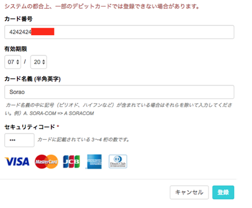
Enterprise Button の購入から利用開始までを解説します。
■ Enterprise Button の購入
すでに購入・登録している場合は、SORACOM ユーザーコンソール から確認できます。Enterprise Button は、 Air SIM 管理画面からplan-KM1 の SIM のひとつとして確認できます。
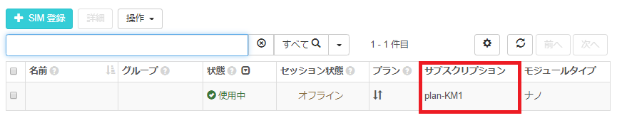
これから購入される場合は、ユーザーコンソールの発注画面 から新規注文ができます。
■ Enterprise Button の利用開始
すでにユーザーコンソールから購入された場合は、ユーザーコンソールの発注画面 から「受け取り確認」を頂くことで登録され、確認できるようになります。

イベントなどで Enterprise Button の現物を購入された場合は SIM 管理の画面 から以下の手順で登録が可能です。
[1] "SIM 登録" ボタンを押下して登録画面を開く
[2] IMSI およびパスコードを入力し "登録" を押下することで登録を完了させる

■ Enterprise Button の名前を設定する
"名前" 列の 鉛筆マークをクリックすることで、たとえば "Enterprise Button" などと名前の設定ができます。

Enterprise Button から Harvest に対して位置情報とクリックタイプを保存する方法を解説します。
■グループを作成し、Enterprise Button を所属させる
[1] ユーザーコンソール の "Menu" から "SIM グループ" を選択します。

[2] "追加" ボタンよりグループを作成します。任意の名前 (たとえば "handson-button") をつけて "グループ作成" を押下します。
[3] "Menu" から "SIM 管理" を選択します。
[4] Enterprise Button の SIM の左端にある チェックボックスを選択し、"操作" => "所属グループ変更" を選択します。
[5] "新しい所属グループ" には作成したグループを選択し、"グループ変更" を押下します。
■ Harvest の利用を開始する
[1] 所属させたグループの名前を押下することで、グループ設定の変更画面に遷移します。
[2] "SORACOM Harvest設定" を開き、"OFF" となっているスイッチを押下して "ON" に変更します。"保存" を押下すれば、Harvest が有効となります。ポップアップされる注意事項では "OK" を押下します。"保存" を押下しないと設定が変更されないのでご注意ください。
■位置情報サービス の利用を開始する
"SORACOM Air for Cellular 設定" を開き、"位置情報サービス" を "ON" に変更し、"保存" を押下します。
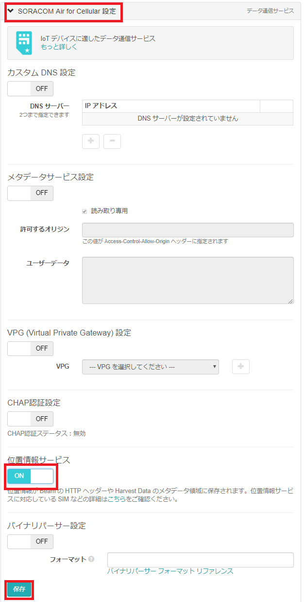
■バイナリパーサー を設定する
"SORACOM Air for Cellular 設定" を開き、"バイナリパーサー設定" を "ON" に変更し、フォーマットには @button と記載し、"保存" を押下します。
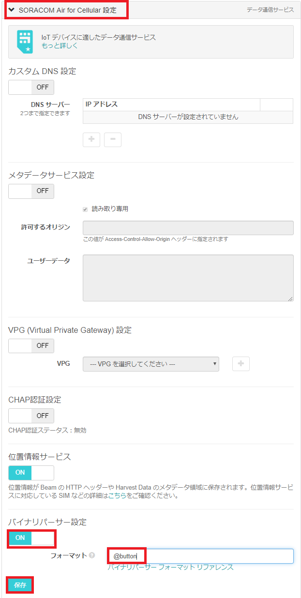
■ Enterprise Button を押して Harvest を確認する
いよいよ Enterprise Button を押します。ボタンをクリックし、 LED がオレンジ色となり、数秒後に緑色となればデータの送信は成功です。
Harvest 上のデータは以下の手順で確認できます。
[1] "Menu" から "SIM 管理" を選択します。
[2] Enterprise Button の SIM の左端にある チェックボックスを選択し、"操作" => "データを確認" を選択します。
[3] "データ" にて、"clickTypeName" が "SINGLE" であることを確認します。
[4] マップピンアイコンを選択することで表示を地図に変更して、位置情報を確認します。左上の "+" や "-" でズームを調整できます。"データ" にも locaton 形式で位置情報が入っています。
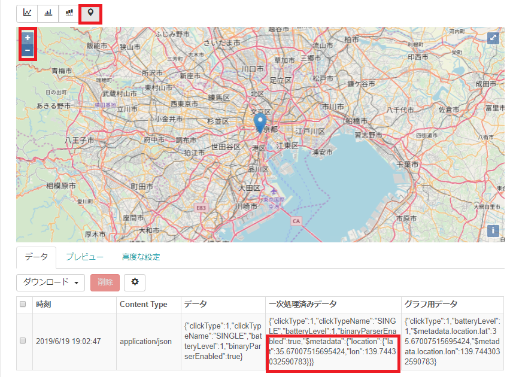
[5] Enterprise Button は以下 3 種類のクリックに対応しています。それぞれぜひ試してみてください。連続してデータの送信をしたい場合は Harvest の画面にて「自動更新」を "ON" にしてみてください
クリックの種類
・シングル ... 短く(1.2秒未満) 1回押す
・ダブル ... 2秒以内にシングルクリックを2回行う
・ロング ... 1.2秒以上押し続ける。

Enterprise Button から Funk を介して AWS Lambda にクリックされた位置の情報とクリックタイプを連携し、slack へ通知する方法を解説します。
■ slack を設定する
当ハンズオンは Slack Webhook について知識のある方を対象にしているため、この節について詳細は解説しません。
Slack の登録は以下のリンクより可能です。
https://slack.com/get-started
Slack の Incoming Webhook を有効にし、Webhook URL を控えておきます。下の画像は Microsoft Store 版 Slack のスクリーンショットを載せています。
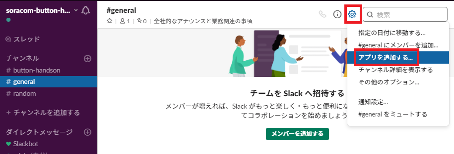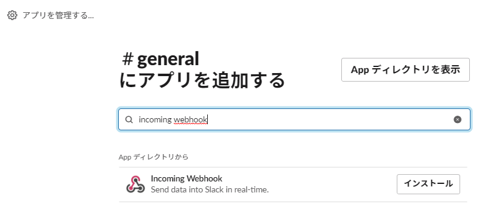 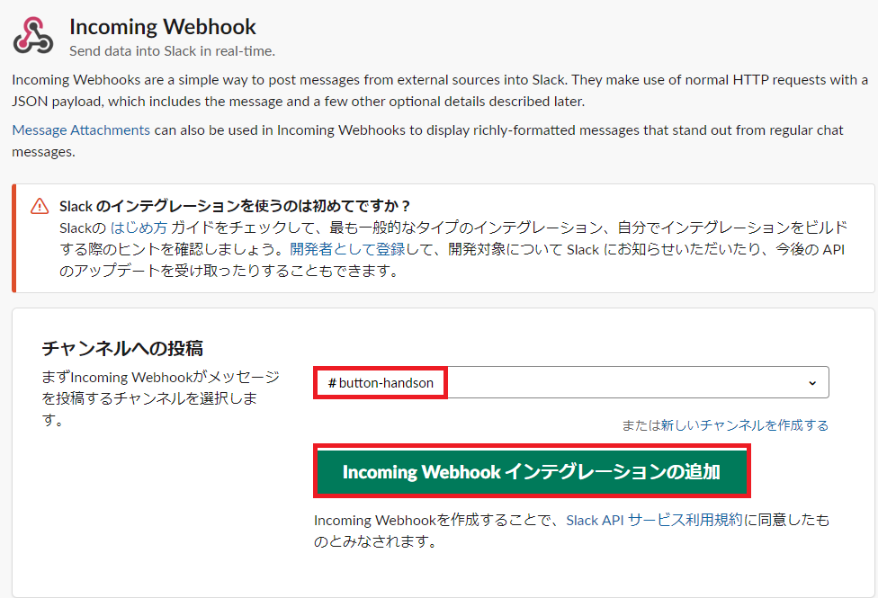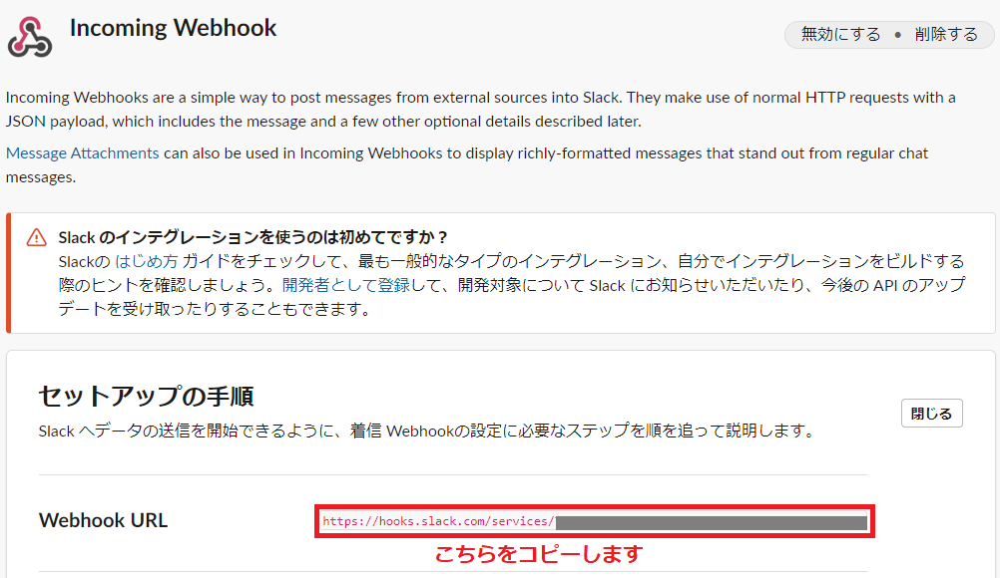
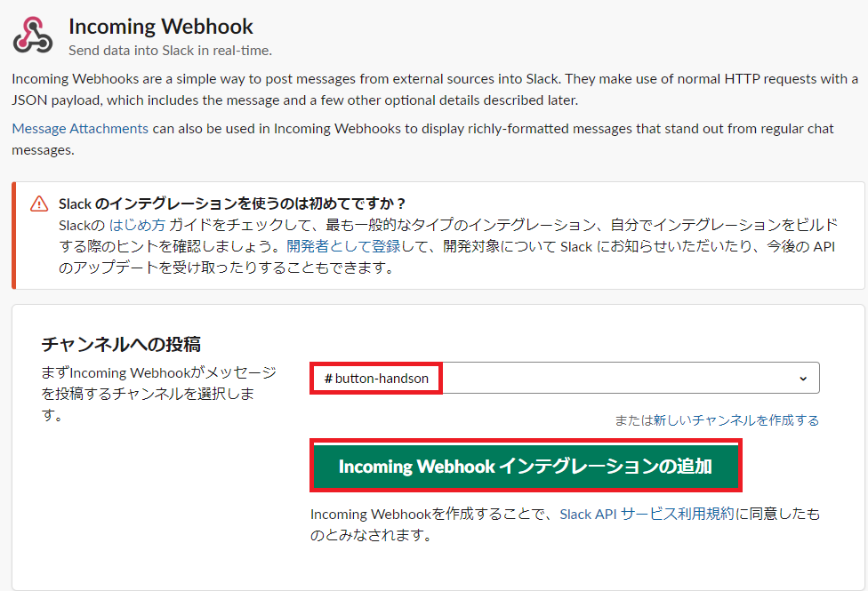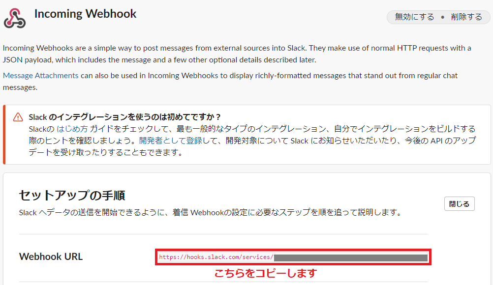
■ AWS Lambda を設定する
当ハンズオンは AWS Lambda について知識のある方を対象にしているため、この節について詳細は解説しません。
[1] AWS Lambda 作成画面 を開きます。
[2] 任意の関数名をつけ、ランタイムは "Node.js 10.x" を選択し、実行ロールは "基本的な Lambda アクセス権限で新しいロールを作成" とし "関数の作成" を選択します。
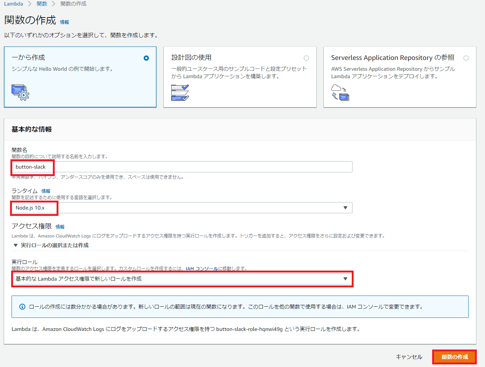
[3] 以下のコードを貼り付け、環境変数 "SLACK_URL" に先ほど設定した Slack の Webhook URL を貼り付けて "保存" を押下します。
const https = require('https');
const url = require('url');
const slackUrl = process.env.SLACK_URL
exports.handler = function(e, ctx, cb) {
console.log('event: %j', e)
console.log('context: %j', ctx)
if(!e.clickTypeName)
{
cb(false, {"result":"ng", "reason":'invalid payload: '+JSON.stringify(e)})
}
var slackReqOptions = url.parse(slackUrl);
slackReqOptions.method = 'POST';
slackReqOptions.headers = { 'Content-Type': 'application/json' };
var payload = {
"icon_emoji":":button:",
"text": `ボタンが *${e.clickTypeName}* クリックされました！ (バッテリーレベルは *${e.batteryLevel * 100}* % です)`,
"attachments": [
{
"title": "clientContext",
"color": "#34cdd7",
"text": "```\n"+JSON.stringify(ctx.clientContext,null," ")+"```\n",
"mrkdwn_in": ["text"]
},
{
"title": "event",
"color": "#e47911",
"text": "```\n"+JSON.stringify(e,null," ")+"```\n",
"mrkdwn_in": ["text"]
}
]
};
if(ctx.clientContext.locationQueryResult === "success")
{
payload.attachments.push(
{
"title": "location",
"color": "#800080",
"text": `<https://www.google.com/maps/search/?api=1&query=${ctx.clientContext.location.lat},${ctx.clientContext.location.lon}|位置情報あり> ${ctx.clientContext.location.lat},${ctx.clientContext.location.lon}`
}
);
}
var body = JSON.stringify(payload);
slackReqOptions.headers = {
'Content-Type': 'application/json',
'Content-Length': Buffer.byteLength(body),
};
var req = https.request(slackReqOptions, function(res) {
if (res.statusCode === 200) {
console.log('Posted to slack');
cb(null, {"result":"ok"});
} else {
cb(false, {"result":"ng", "reason":'Failed to post slack ' + res.statusCode})
}
return res;
});
req.write(body);
req.end();
};
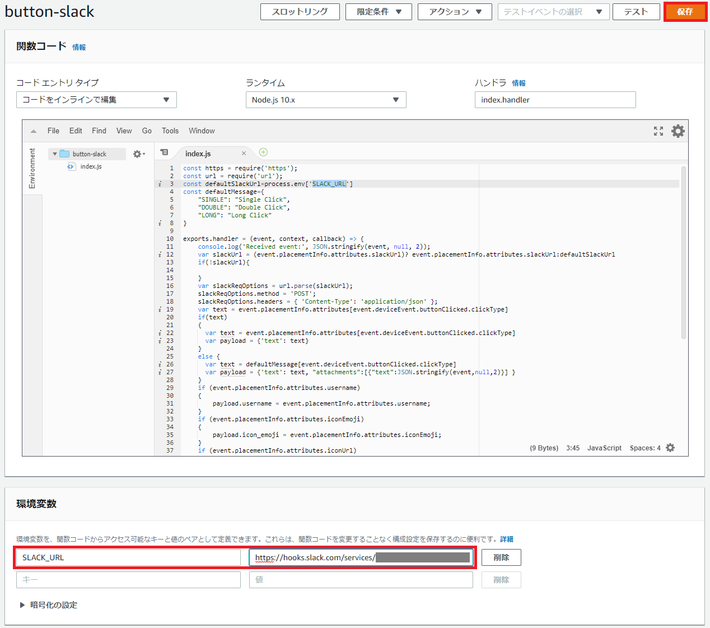
[4] Lambda の arn をコピーします。
■ Lambda 実行用の AWS IAM ユーザーを作成する
[1] IAM ポリシー を作成します。詳細は解説しませんが、こちらの JSON に先ほどコピーした Lamda の arn を入れて利用ください。
{
"Version": "2012-10-17",
"Statement": [
{
"Sid": "AllowAuroraToExampleFunction",
"Effect": "Allow",
"Action": "lambda:InvokeFunction",
"Resource": "先ほどコピーしたARN"
}
]
}

 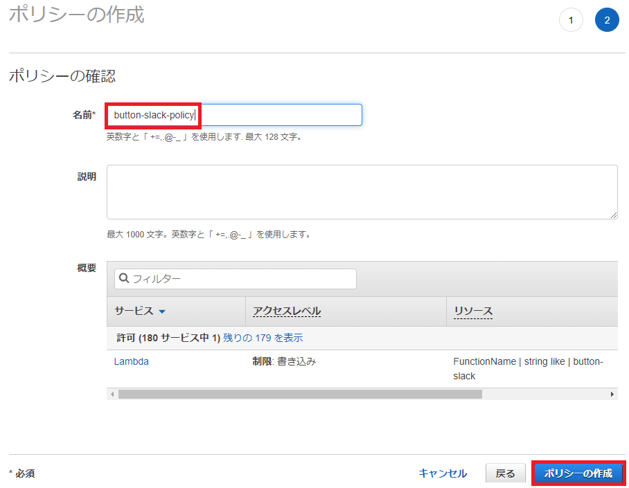
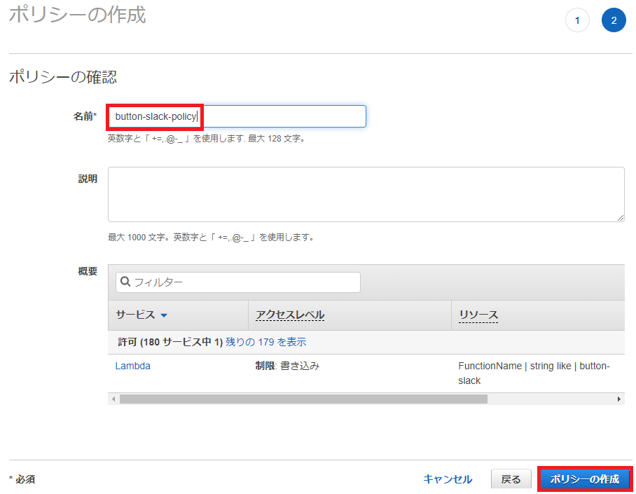
[2] 作成した IAM ポリシーをアタッチしたユーザーを作成します。タグは不要です。
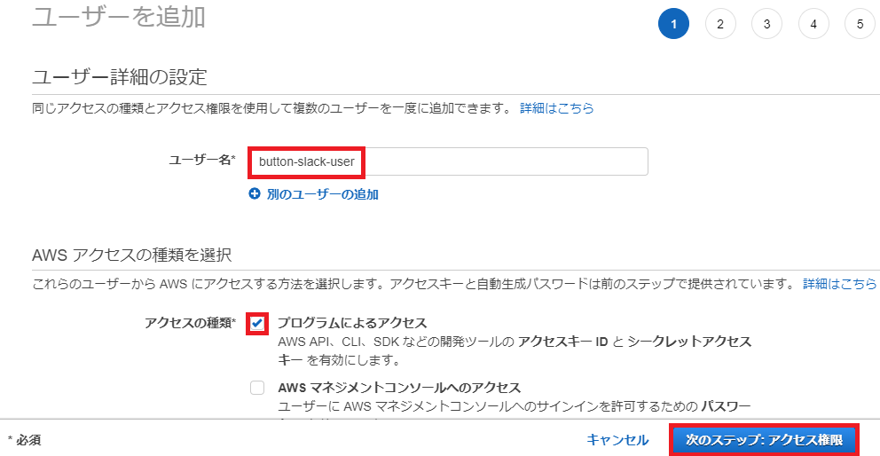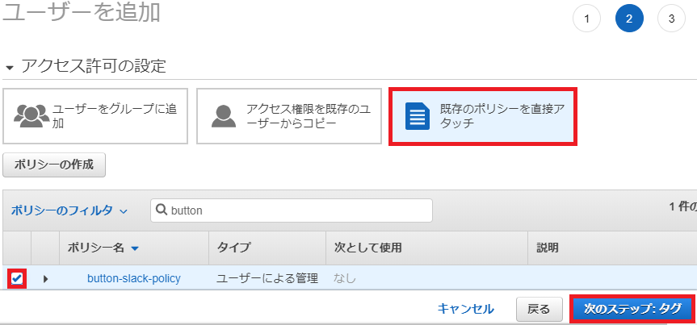
[3] 作成したユーザーのアクセスキー ID およびシークレットアクセスキーをコピーします。
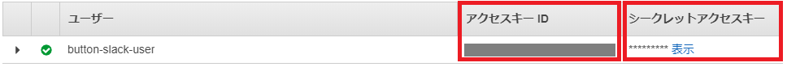
■ AWS IAM ユーザーの認証情報を SORACOM に登録する
[1] SORACOM ユーザーコンソールの右上のユーザー名を押下し、"セキュリティ" を選択します
[2] "認証情報ストア" => "認証情報を登録" を選択します
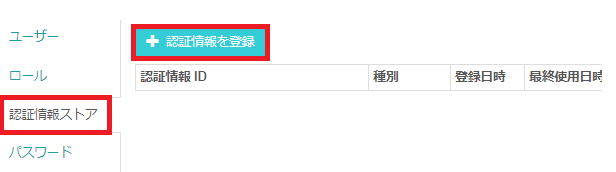
[3] "認証情報 ID" は任意に記載し、先ほどコピーした AWS ユーザーのアクセスキー ID およびシークレットアクセスキーを入力し、"登録" を押下します。
■ Funk を設定する
[1] ユーザーコンソールの "SIM 管理" メニューより、作成した SIM のグループ名を選択します。
[2] "SORACOM Funk 設定" を開き、"ON" にし、先ほど登録した認証情報やコピーした Lambda の arn を入力して "保存" を押下します。
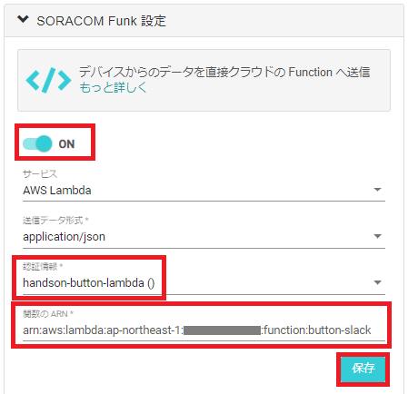
■ Enterprise Button を押して slack 通知を確認する
以下のような通知が確認できます。
確認できない場合は、Lambda のメトリックにて「ログが出ているか」「エラーが出ていないか」を確認してください。
Enterprise Button 、位置情報サービス 、Harvest 、Funk の解約方法について解説します。
■位置情報サービス、Harvest、Funk の解約
位置情報サービス、Harvest、Funk を有効にしたグループ配下に SIM があると基本使用料金が発生します。詳細は 目安となる料金 の章をご確認さい。
これらを解約したい場合は、それぞれの機能についてグループで無効化します。
[1] ユーザーコンソールの "SIM 管理" メニューより、作成した SIM のグループ名を選択します。
[2] "SORACOM Funk 設定" を開き、"OFF" にし "保存" を押下します。
[3] "SORACOM Harvest 設定" を開き、OFF にし "保存" を押下します。
[4] "SORACOM Air for Cellular 設定" を開き、"位置情報サービス" および "バイナリパーサー設定" を "OFF" にし "保存" を押下します。
[5] ユーザーコンソール から 対象の SIM のチェックボックスを選択 => "操作" => "所属グループ変更" を選択します。
[6] "グループ解除" を選択します。
■ Enterprise Button の解約
Enterprise Button は plan-KM1 の基本使用料が発生します。詳細は 目安となる料金 の章をご確認ください。
もし Enterprise Button の解約を希望する場合は以下の手順で可能です。
[1] ユーザーコンソール から 対象の SIM のチェックボックスを選択 => "操作" => "解約" を選択します。
[2] "解約プロテクション" を "OFF" にして "解約する" を選択します。